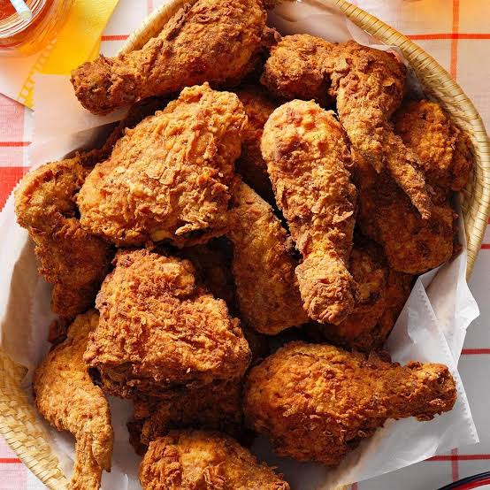

Name:
Anthony J. Orias
Birthdate:
July 9, 2007
Address:
Brgy. 6, Buenavista, Agusan del Norte
School:
Saint Michael College of Caraga
my childhood was fun and also i like playing games outside.
well my teenage is also fun i like communicating people.
well im almost adult i still dont have exprience yet but i hope my adulthood is good and fun.
rex Orange County, whose real name is Alexander James O'Connor, is an English singer, songwriter, and musician known for his indie pop and alternative music. He became popular for his emotional lyrics, relaxing melodies, and unique singing style. Some of his best-known songs include Best Friend, Sunflower, Loving Is Easy, and Pluto Projector. His music often talks about love, relationships, and personal experiences, making him a favorite among fans of mellow and heartfelt music.

Fried chicken is a popular dish made by coating pieces of chicken with seasoned flour or batter and then cooking them in hot oil until they become crispy and golden brown. It has a crunchy outer layer and juicy, tender meat inside. Fried chicken is enjoyed in many countries and is often served with rice, fries, mashed potatoes, or other side dishes.
Looc Beach is a beautiful beach in Surigao City, Surigao del Norte, known for its soft white sand, clear blue water, and peaceful atmosphere. It is a popular destination for swimming, relaxing, picnics, and enjoying the natural scenery. Surrounded by coconut trees and coastal views, Looc Beach is a favorite spot for both locals and visitors who want to experience the beauty of Surigao's coastline.